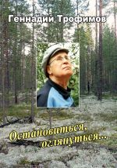

Геннадий Трофимов
ОСТАНОВИТЬСЯ, ОГЛЯНУТЬСЯ...
Стихи 2002-2010 годов
к оглавлению

Книга печатается в авторской редакции.
Дизайн обложки - Е. Трофимов.
ООО "Типография "Полиграф-Сервис"
г. Сыктывкар
2010
Трофимов Геннадий Евгеньевич родился в 1932 г. в рабочем поселке под Великим Новгородом. 1941-1945 гг. провел в эвакуации с матерью, отец погиб на Ленинградском фронте в 1943 г.
Окончив школу в 1950 г., поступил в Ленинградский Горный институт на геологоразведочный факультет, который закончил в декабре 1955 г. Стихи начал писать в 1947 г. В институте печатался в институтской газете, в сборниках литературного объединения (Лито), в городских газетах. Объединением руководил известный поэт и педагог Семенов Глеб Сергеевич. Вместе с Геннадием Трофимовым в Лито занимались студенты, будущие известные поэты Владимир Британишский, Глеб Горбовский, Александр Городницкий, Андрей Битов, Леонид Агеев, Александр Кушнер и многие другие.
После окончания института работал геологом в г. Воркута, с 1960 был начальником Ухтинской геологоразведочной экспедиции вплоть до 1989 г.
В 1964-1966 гг. был командирован в Индонезию для руководства поисками и разведкой месторождений коксующегося каменного угля. В 1974-1978 гг. был командирован в Гвинейскую республику для руководства группой советских специалистов-геологов. В 1989 г. вышел на пенсию.
Продолжал печататься в литературных сборниках, журналах и газетах. В 2002 г. издал книгу стихов и прозы. В 2003 г. был принят в Союз российских писателей. Участвовал в сборниках поэзии Санкт-Петербурга, Сыктывкара и Кисловодска, издал книги стихов и воспоминаний.
В 1991 г. продолжил работу начальником Кенийской экспедиции (г. Москва), а с 1997 г. - руководителем ООО "Тимано-Печорский научно-исследовательский центр-2", где трудится до настоящего времени.
За успехи в обеспечении Коми Республики и Российской Федерации минеральным сырьем награжден орденами и медалями, имеет многие профессиональные поощрения. Заслуженный работник Коми Республики.
Сколько речке не виться,
Станет речка к зиме.
Где б ни случилось родиться, -
Состоялись на Коми земле.
Состоялись. Не пригодились, -
А сделали дело своё.
Ножками, ножками исходили
Землю до самых краёв.
Под ногами и в глуби копали.
По науке. Имели фарт.
Дары полезнейших ископаемых
Увеличили во сто крат.
Эх, сырьё - благодатный бизнес!
Куролесят теперь широко.
Ещё шире - людей укоризна
За сварганенный жизни раскол.
А раскол - перманентное средство
Облапошенных взять под уздцы,
Схлопотать детишкам наследство
Да и в воду спрятать концы...
Верёвочке сколько не виться, -
Терпенья лопнет запас.
Состояться - значит родиться.
Только Родине - хватит ли нас?
Как ни крути, как ни верти,
А старость - тут как тут.
Держал старушку взаперти, -
Хрен днём с огнём найдут!
Нашли. Без хрена и огня
Года сорвали дверь:
Восьмой десяток разменял
И маюсь, - что ж теперь?
Старушке эта маята
Привычна и мила:
Покруче немощь схлопотать, -
И все её дела.
А у меня - наоборот, -
Хлопот аж полон рот:
Похорохориться - пока
Карга не схватит за бока.
Кое-что ещё помнится.
Кое-что - подзабыто.
Время гикнуло конницей,
Отстучало копытами.
Время стукало-брякало.
Время лица корёжило:
Быстротечно для всякого,
Но быстрей, чем положено.
Время встряло в просчёты,
Опустивши поводья.
А те кони - ещё
Буераками бродят.
Стать, конечно, не та.
И копыта сносились,
Но тех лет маята
И сегодня - под силу.
Эх, залётные, - трогай:
Погудим ещё малость
Перед дальней дорогой.
Уж не долго осталось.
Щупали ноги прибой, -
Щекотали их камни отбойные.
Стрекотали над головой
Птицы бесперебойные.
Малахитовый Калимантан
Под колпаком бирюзы.
Ленью полуденных стран
Пахучий воздух разлит.
И под шуршание волн
Чудное - без перерыва.
Река Махакам в полон
Взята Макасарским проливом.
Проливу
отлив-прилив -
Что кинематограф природы...
Два года продлится миф,
Сказка иль что-то вроде.
Сорок минуло лет
Бытия,
быльём не поросшего.
Старею,
грустью задет,
смакую время хорошее.
Какая осень, чёрт возьми!
Столь долгой не бывала сроду.
Весенний перецвет возник,
На бис исполненный природой.
Заволновались старики,
Взволнованные перецветом, -
Годов веленью вопреки
Распетушившиеся дети.
А вот тайга без перецвета:
Чернеет лес полунагой,
И жалкие ошмётки лета
Хрустят тревожно под ногой.
Обрывочны, фрагментарны
Жизни моей заморочки.
В общем-то элементарные,
Решаемые без проволочек.
Я из сов. служащих родом.
Они ж из крестьян, понятно.
"Не имели, не состояли" и вроде
Полная лицеприятность.
Война оборвала корни:
Родни почти не осталось.
Меня же судьба запомнила
И поддержала малость.
Питер. Горный. И - Север.
Доверие. Рост. Загранка.
Но душа на Север подсела,
Где фарт познал спозаранку.
Тундра. Тайга. Саванна.
Бездомье палаток. Из болот
Кровососущая мразь беспрестанная.
Гудящие ноги. Лошади. Вертолёт.
Но перед ежедневной встряской
Рассвета невообразимые чудеса:
Свежесть. Запахи. Краски.
Реки алюминиевая полоса...
Натрудив маршрутами ноги,
Умудрился руками водить.
Экспедиция - судьбы многих,
И моя ариаднина нить.
Созрели. До уникальных открытий.
Нас - до полутора тысяч. Боксита на сотни лет.
Вылупилась перестройка. С сырьём шито-крыто,
А экспедиции в помине нет.
Власть утешила: мол, новая появится,
Сохранять прежнее - не с руки.
Курицу, несущую золотые яйца,
Прирезали. Запросто. Отнюдь не дураки.
Глушь. Глухомань таёжная.
Таинственная глушь.
И тишиной тревожною
Похрустывает сушь.
По мху грибные слиточки
Меж сосен разбрелись.
И беленькие ниточки
Упархивают ввысь.
И тишиной придавленный
Осенний стынет день.
А я с печалью давнею
Разглядываю пень.
Пень, временем изъеденный,
На лешего похож...
Приятно быть соседями:
Мы с ним - одно и тож.
С годами трудно
понятно писать.
Проще - писать сложно.
Слегка невнятные голоса
Понять не всегда, но можно.
С годами яснее,
что всё сложней,
Чем "да" или "нет" в природе.
И правды-матки нету,
ей-ей!
И не нужна она вроде...
Неуютно. Будто кому-то должен.
И вдруг напролом, сгоряча...
Спокойнее,
может быть - строже:
Маячит конечный причал.
Уплывает близкое, отчаливает.
Холодно на ветру.
Не буду лелеять отчаянье, -
Только очки протру.
Успокоюсь. Главное сдюжил:
Деревом, делом, детьми.
И отчалю.
И не буду разбужен
Даже теле-, радио- и
прочими СМИ.
Мочь - ни в зуб, а подержаться хочется.
И так во всём, не только в этом.
Да, наградила нас судьба - пророчица
И нарекла сиё - менталитетом.
В воду - без брода,
Бревно в глазу,
Седина в бороду,
Без тормозов - газуй!
Эх, печи сапоги да тачай пирожные:
Все под силу, справимся - авось!
Сомневаться - вовсе не положено,
И девиз наш - оторви и брось.
Вроде бы всё идёт чередом.
Только болячек - до кучи:
Хвори залётные жрут поедом,
Уничижающе мучают.
А осознали, что близок уход?
Вряд ли - профанфаронили.
Дни устремились: за годом год.
Чем далее, тем стороннее.
Стороннее от пыток-попыток,
Стороннее от себя самих.
Даже у передовых и прытких
Пыл бедовый затих.
А предки - такое сдюжили, -
Покруче нонешней белиберды!
Знать, безвременье отутюжило
Струпья великой беды...
Песне конец - жизни конец.
И эти концы - бесконечны.
Сколько голов повенчал венец
Во времена быстротечные!
Скоро уйду. Вспомнят порой.
Потом потихоньку забудут.
"Первый - второй, первый - второй"...
И переклички не будет.
...Вакуум булькнул.
Брызги Вселенной
Рванули в космический мрак.
Они остывали,
квантовой пеной
Крутя миров кавардак.
В миг
безграничность ухватила
Пространство, время и миры.
Мелодия Большого взрыва
Мильярды лет без перерыва -
Загадка Божией игры...
Ухта в ночи, а я в страдании:
Не спится, с книгою в руках.
Залез в глубины мирозданья, -
И обуял вселенский страх.
Неведомая "чёрная дыра",
Жующая куски Вселенной,
Не доведёт потомков до добра,
Враз превратив их
в квантовую пену.
Ау! Земляне и другой народ,
Затерянный за сотнями парсеков, -
Пора очухаться, дырявый рот
Задраив интеллектом человека.
Дыра пока не ведома. Пока.
А сколько времени осталось?
И у кого взять напрокат
Тот интеллект,
что свергнет данность?
Солнце палит 41-м годом.
Детские глаза узки.
Школа полна военным народом.
Штабные - новости рвут на куски.
Изловили немецких парашютистов.
Пятеро двоих ведут на допрос.
Один - измазанный, другой чистый,
Только щетиной оброс.
Измазанный - улыбчив, лопочет по-своему.
Щетинистый - надменно молчит.
Вынесли стул. Шеренгу построили.
Уселся полковник за щит.
Притащили училку - нашу немку, -
Не открывала - сбили замок.
Переводы: туда-сюда, полемика.
Полковник на стуле - взмок.
Мальчишкам не надо парада, -
Все на заборе торчат...
Вскоре из-за школьной ограды
Три выстрела прозвучат.
Запредельность уводит друзей.
Самые тяжкие годы.
Друзья, что водой не разлей,
В воду уходят без броду.
Забвенья река глубока, -
Канет прошлое в Лету.
И ни одна лихая строка
Не удостоит ответом, -
Что там? Когда и как?
Может быть, лишь предтеча?
Глухо. А за окном пока
Вечер. Недолгий вечер.
Памяти В.П. Абрамова
Ваша светлость - Василий Петрович,
Отсветили мы - так и сяк.
Как оценишь парою строчек
Нашей службы-дружбы пустяк?!
Всё пустяк - перед взрывом Вселенной
И уходом в небытиё.
Будь же в памяти нашей
нетленным,
И да светится имя твоё.
Жизнь промчалась.
Галопом - как правило.
Свет - как след доброты.
Не томись: отсветили
правильно.
И для многих светом был ты.
Памяти Н.И. Матюхина
Помню Матюхина Колю.
Его забывать нельзя.
И живы будем,
доколе
Нас помнят наши друзья.
Легко ли быть нестандартным,
Импульсивным и заводным,
Кладезем, полным талантами,
Кои не вдруг видны?!
Судьбина облюбовала
Отчаянного паренька,
Но перебрала малость
В главном, наверняка.
А главное - человек без кожи:
Любые на свете грехи
Шибко его тревожили,
Как поэта стихи.
"Были когда-то
и мы рысаками"
На ноте высокой он пел...
Больно резво скакали.
Тормознуть не успел.
Памяти жены
Я приду к тебе как-то вечером,
На закате последнего дня.
Что душа у меня искалечена
Не заметит даже родня.
Я такой же лысый и крепкий,
Фанфаронящий лишь слегка.
Только вот прикрываюсь кепкой
И не так уж крепка рука.
Я приду, хоть ты не просила,
Кепку сброшу и в келью сойду,
Где ты стынешь, моя красивая,
На незнамо каком холоду.
Может, что-то ещё переменится:
Протрубит архангел подъём.
Вспоминай, как крутится мельница, -
Может быть, вдругорядь придём...
Памяти жены
Протяни мне свои ладони
Из безмерного небытия,
Где давно уже похоронена
Промелькнувшая юность моя.
Та, что выбрала летним вечером,
Не раздумывая, наверняка,
Свою женщину столь доверчиво,
Что казалось тогда - на века.
Но века оказались не вечными:
Сорок восемь неполных лет.
На мои согбенные плечи
Опрокинулся белый свет.
Знаю, что не дотянешь ладоней
Через бездну небытия.
Утешаюсь: всего бездоннее
Благодарная память моя.
"Земной любви недовесок
Слезой солить доколь?"
Марина Цветаева
"Ты льёшься у меня из глаз", -
Строка Цветаевой Марины.
Кто на такое был горазд?
Хотя б наполовину?
"Ты льёшься у меня из глаз", -
В письме Цветаевой к поэту.
Какой восторг, какой соблазн
Поэт испытывал при этом?!
Не то, чтоб вовсе наотрез:
- Не сдюжу, -
Так решил галантно, -
- Не сдюжу той любови крест
И неподъёмный крест таланта - ...
Ну, а доколь?
До той черты,
Елабуга что очертила
Рукой мертвящей нищеты
Её бесхозную могилу.
Ни мужа, ни детей, ни друга...
И лишь слеза прощально брызнет
На распоследнюю услугу
Верёвки,
что спасёт
от жизни.
Нет обид на обиженных Богом.
Лишь обидно, что их - орда:
Не заблудших, сирых, убогих,
А - без совести и стыда.
Есть такое качество -
- нравственность.
Коль обидел Творец,
увы, -
Тут обиженным быть
опасливо:
Потому - не сносить головы.
И добро бы - свои лишь головы,
Так ведь - "нравственные"
сперва!
Потому как у нелюди
с норовом -
Окаянная голова!
Если нелюдь круто обижена, -
Что ей заповедь "не убей".
Моисеево Пятикнижие
Не утешило добрых людей...
Вот пишу и, наверное, лишнее, -
Но мыслишка гложет одна:
А нельзя ли обиды всевышние
Упразднить - навсегда?
Нежно падает снег.
Тихо-тихо. Беззвучно.
Ветер замедлил бег, -
Лишь от случая к случаю.
Снежинка коснулась лица
И испарилась тут же.
А эти спешат домерцать, -
Под фонарями кружат.
В мире покой и тишь,
Такое и не приснится.
Как на часах стоишь
С влагою на ресницах.
Эти блаженства часы
Жизни иной равнозначны.
И веришь, слегка поостыв,
Что мог бы прожить иначе.
Хлопья снежные на землю сырую
Важно падают. Не торопясь.
Куда спешить? Быть вживую
Остались секунды. Дальше - грязь.
Неприглядно и неприкаянно, -
Свербит на душе:
Бодрости прежней развалины,
Мудрости тощий кошель.
"У природы нет плохой погоды..."
Есть, однако. При чём "благодать"?
От непогоды иные народы
Не могут на ноги встать.
Белые хлопья на чёрную землю
Медленно падают, не торопясь.
И непогоду природа приемлет
Как новорождённую грязь.
Сплошное болото. Вокруг
Колышется хлябь зеленучая.
Не вдруг я добрался, не вдруг, -
По самому крайнему случаю.
Будто на минном поле, -
Ошибаться нельзя:
Иначе в миг упокоит
Хлюпающая стезя.
И не в одиночку, -
Только вдвоём, втроём:
Предательские кочки,
Булькающий водоём...
С кондачка о природе забота,
Видит Бог, доведёт до беды.
Дело дрянь - осушать болота,
Не познавши живой воды.
Всё валится из рук: разруха.
И не вокруг. Не около себя. -
В самом себе. И не хватает духа
Очнуться от уменья прозябать.
Уменье прозябать. Такое дело
Не всякому бывает по плечу:
Уже давно свеча сгорела,
И мочи нет на новую свечу.
Встряхнуться бы. Расправить плечи.
Привычно прянуть за порог.
И зашагать судьбе навстречу.
Как прежде, в молодости, мог.
Как много лет ушло на пустяки.
Хотя и пустяки нужны кому-то.
Всё относительно: от этой вот строки
До таинства последнего маршрута.
Жизнь мимолётна. Только понимать
Обычно начинаешь поздно,
Когда уже не дать, не взять;
И всё на свете слишком розно.
Ну, что ж: довольным быть собой
Не выпал, по несчастью, случай.
Так и живёшь - за сбоем сбой.
А годы властвуют и мучат.
В.Я. Назарову
...Цепь отброшена. Вмята.
Втоптана.
Смерть сплошная - чуть выше лба.
Но рывком на бруствер окопа
Перекинул тело комбат.
Оглянулся. Поднялся, натужась.
Гневным криком разорван рот.
И к победе сквозь смерть и ужас
Батальон рванулся вперёд...
Сколько ж надо силы и веры,
Чтоб подняться и всех поднять!
В это трудно сразу поверить.
Это трудно сразу понять.
Надо делать, отбросив нервы,
Будь ты штатский или солдат
Точно так же как этот Первый
С фронтовой открытки "Комбат".
Р.Р. Фурману
Подоспел юбилей - открывай ворота:
Попутчики припозднились.
Сколько вёсен гром грохотал,
Сколько сапог износилось.
Сколько выпито, сколько спето,
Сколько свёрстано дел;
Сведать столько чудес света
Каждый из нас успел.
Но споткнётся память изначально
О кассетку, обретённую тобой,
С голосом продрогшим
поэта печали:
"А шарик вернулся, а он голубой..."
Ю.М. Лысову
Мы бывали с тобой когда-то
В предрассветных шестидесятых
На рассвете, не на закате,
На реке, агатом богатой.
Эта речка седыми веками
Проточила базальты трудно,
Из каньонов вымыла камни,
Разбросав по тиманской тундре.
Мы искали их в белых струях,
Там, где хариусы водились;
И скупую дружбу мужскую
На полвека длиной находили.
А.М. Плякину
Река Ухта весеннего разлива, -
Где узко - прёт,
А шире где -
лениво
Колышет тёртый лёд.
На левом поворотном берегу -
Заторные торосы -
Зимы останки
стерегут
И тают возле плёса.
Как складно всё в природе!
И мы,
как часть её -
Торосов этих вроде -
В ту ж реку перейдём.
Р.Б. Курьяте
Я слыву достаточно угрюмым,
Ну, а ты - со стажем доброхот.
Скажешь, разные? Подумав,
Убедишься, что наоборот.
"Мы все войны шальные дети",
Шестидесятники, хватившие сполна;
За всё готовые к ответу
Когда потребует страна;
Груз пятилеток водрузив на плечи,
Многое успели сгоряча.
Поостыв, недомоганья лечим,
На потомков изредка ворча.
Кстати, а сейчас какое дело
Нас сумеет удовлетворить?
- Дело?.. ничего чтоб не болело, -
И не мешало просто жить.
Н.Б. Какунову
Что давно прошло - обычно нравится:
Рудник, Воркута - как на ладони!
Ну, какая ж Воркута красавица?
А была. Во время молодое.
Вспоминаю улицу Зелёную:
Ну, какая ж зелень в Заполярье?
А была. Мальчишки закалённые
Вкалывали. А не дурака валяли.
Друг мой давний - раритетный:
Более полвека в Воркуте!
Добровольно. И по всем приметам
Между ними - полный паритет.
Оживают ощущенья прошлого:
Память грустно тянет канитель.
Время, время. Времечко хорошее.
И над временем - полярная метель...
Станиславу Подольскому
Не сидится мне, не сидится.
Что-то гонит вперёд и вперёд.
А в руках задремала синица.
А по небу журавль плывёт.
Надо б раньше, а то припозднился;
И зачем теперь нужен такой?
О таких уже плачет больница,
А быть может и вечный покой...
Вечно пусть журавлиною стаей
То курлыканье тает вдали,
И тихонько пускай догорает
Костерок на краю земли.
Угорское скуластое лицо,
И удивительно славянский говор.
Кто был ей матерью и кто отцом,
В каких веках случился сговор?
За тайной лет, смешением кровей
Узнать об этом невозможно.
Великоросс от пяток до бровей
Из окружающего создан.
Люби свой крест, владей судьбой,
Генетикой не кичась всуе.
Нам предки дали жизнь с тобой,
Потомки предков не осудят.
С чудо-юдо схожая любовь,
Груду лет решавшая "могу ли я",
Угодившая не в глаз, а в бровь, -
Отцвела пустопорожняя.
Жизнь как рюмку - выцежу до дна,
Не заполучив семян на всхожесть.
Жизнь - она, как и любовь, - чудна,
На кого бы ни слыла похожей.
Ева из чего создана была, -
Из праха или из адамова ребра?
В Книгах Моисея отнюдь не мура,
Но ответа на вопрос - не разобрать.
Потому, что написано так и эдак.
Как хочешь, так и понимай.
Конечно, дюже настрадался предок,
Но смущает полный раздрай...
И сказал Создатель, сделав дело:
"Размножайтесь. Это - хорошо".
Так при чём и змей, и яблоко и древо,
Коль Создатель к этому и шёл?
И за что из рая шуганули, кстати?
Мол, узрела парочка себя голышом.
Но, простите, в этом сам Творец-Создатель
Адаму утеху нашёл.
Уж не знаю, насколько вечен
Миф библейской седой старины,
Но вопиющие противоречия
В слишком Ветхом Завете видны.
А вот все Адамы ответ обеспечили:
Ведь не Ева одна, -
Из прелестнейших противоречий
Каждая женщина создана.
Какая там концепция,
Какая там доктрина?!
Как ярлыки отцепится
Писаний половина.
Хватило б десяти
Библейских постулатов,
Чтоб мудрость донести
До каждого собрата.
Тысячелетья - влёт.
Учения - лавиной.
А истина бредёт
Дорогой длинной.
Непознаваема она.
Она - от Бога,
И потому длинна
Её дорога.
Сочувствую религии.
Не против и не за.
Что значилось веригами,
Теперь уж тормоза.
Без тормозов не можно:
Иначе всё в разнос.
Наука потревожила
Божественный вопрос.
Пытливость человечья
Без тормозов - беда:
Опасная предтеча
Дороги в никуда.
Бежит, бежит дорога.
Созвездий вьётся рой.
И тормознуть немного
Так хочется порой!
Я - ленив? Компьютер не освоил.
Сыгнорировал технический прогресс.
И кручусь, как в деревенской школе,
С авторучкою наперевес.
Впрочем, ныне и в деревне,
Коль не врут, технический ажур.
Может быть. Но я к породе древней
Староверческой принадлежу.
Сомневаюсь. Всякое бывало:
И до Евы, говорят, была Лилит.
Одного прогресса явно мало,
Коль душа о ближних не болит.
"Ручка", "мышка". Разве в этом дело.
Жизнь буреет как осенняя трава.
Но, ей - Богу, мне не надоело
Новое о старом узнавать.
Воспоминания.
Они приходят
Без спросу. Я им сам не рад.
Но замолаживают, -
алкоголя вроде
Успокоительный заряд.
И горестно и вовсе обалдело,
И стыдно, и почётно
вновь
Дышать и жить, и делать дело,
И разгонять по жилам кровь.
Я вспоминаю. Ну, и что такого:
Я заново живу опять.
Смурно и впопыхах, и бестолково, -
Но возвращая годы вспять.
Необязательность.
Пошлее нет повадки:
Пообещать, а сделать - не к чему.
И наглость, что, мол, взятки гладки, -
Пусть выйдет боком самому.
И вежливостью королей упрочена
Стань истиной из века в век,
Что обязательным и точным
Быть должен каждый человек.
Путь и путаница - рядом.
Горизонт из ямы - скуден.
Грёзы, что рождались кряду,
Живы будем - не забудем.
Всё путём. Не надо хныкать.
Заплутали, - так найдёмся.
И от всякого притыка
Отойдём... И обойдёмся.
Каждый бывает молод.
Молод - не бестолков.
Новгород старый город,
Много ему веков...
Было всё. И варяги - вороги,
И от викингов витязь - князь.
Чуть провешенные дороги
Засосала болотная грязь.
По зиме, не теряя времени
И минуя летучую гнусь,
Заявилась ватага
племени,
"Яще ныне зовомая русь".
Русь поконная, ильменцы пешие
Побратались словеновой брагою
И к древлянам лесами лешъими
Подались единой ватагою.
Что-то было, чего-то не было:
Заплутало в древних годах.
То ли дань направились требовать,
То ль отлаживать города.
Новогород моложе Ладоги.
Рюрик ведал, с кем надо дружить:
Основательно, крепко, надолго.
Не за дань. А жить и княжить.
Ты говоришь, что мы идём туда?
Мне кажется, что мы идём оттуда.
Столь оптимального мартышкина труда
История во веки не забудет.
Вновь поднимаем бытность на дыбы,
Отбросив наработки вековые.
Надеясь правду-матку раздобыть,
Как добывать её - забыли.
Куда идём и так ли мы идём, -
Кто знает? Хотя знает каждый,
Как тяжела Россия на подъём
И чем это кончалось
не однажды.
Доблесть наша - вера сверх разума.
И чтоб доблесть сия не ослабла, -
Ни единожды не промазав,
Регулярно ступаем на грабли.
Несть числа подобных "ступаний"!
Реформаторские затрещины
Лихо рушат те достояния,
Что от разума предков завещаны.
Не лихачьте, родные. Поверьте,
Коли разум сейчас не в почёте:
Ведь Россия одна на свете,
За неё мы, каждый в ответе.
А у нас - за просчётом просчёт...
Стыд или страх горше?
Что в лоб, что по лбу, небось.
Но стыд позабыт-позаброшен,
Страх же - заглавный гость.
Страх и в заднице поротой,
В пятках душа когда.
Страх людей перемолотых
В подлые наши года.
Страх, веками спрессованный
И двуличьем текущих лет, -
Выковал обоснованный
Сволочной менталитет.
Стыд же - глаза не застит.
Бесстыжим бодрее жить
И любой подвернувшейся власти
Долго и честно служить.
Не всякая власть - от Бога.
Иначе как воспринять
Бульканье власти убогое,
Пульсирующее вспять?
В который раз допульсируем
До великосмутной беды,
Когда отпразднуют сирые
Свершение белиберды.
В мире всё повторяется, -
Только бульканье круче...
Курица несёт яйца, -
Яйца курицу учат.
Сколько на свете радостей, -
Столько же там и бед.
Судьба из этаких разностей
Каждому вяжет букет.
А вот кому перепало
Того иль иного добра,
Достаточно или мало, -
Смертному не разобрать.
С приобретённым букетом
Цацкаюсь много лет,
Но не усёк при этом
Удачлив я или нет.
Да и какая удача,
Коль виснет на вороту
Огромной страны незадача:
Реформаторский колотун.
На фронте семейном потери;
Горестно называть.
Житейские канители:
Не поймёшь - возврат иль разврат.
Но удачлив, по мелочи, всё же.
Видать, выручает порой
(Глядишь, - и снова подможет)
букетик задрипанный мой.
Канве есенинской сродни,
Но сам ему отнюдь не ровня,
Пошевелю былые дни, -
О небыли и были вспомню.
Всё чередом, и всё путём.
Так было или так казалось
Пока крыла не распростёр
Соглядатай по кличке "старость".
Не слыл по жизни бодрячком,
А нытиком - тем паче.
И здесь не проскользну бочком,
Надеясь на удачу.
Канва прервётся и моя, -
Для всех - один удел.
Но несказанно жаль огня,
Что в нас не догорел...
Мне осталось быть не долго.
А писать - еще короче.
И без ложного восторга
Перестану морду корчить.
Мол, такой-сякой и всякий
Для чего-нибудь сгожусь;
Настоящим раскорякой
Без труда преображусь.
Даже в тлен, во прах
Иль в пепел. "Быть или не быть?"
Некрещёным вертопрахам
Укротили прыть.
Скоротал я много сказок.
Плохо ль, хорошо...
Не забыт и не наказан.
Посмотрел. Ушёл.
80 для пишущих - слишком.
Век половины - короче:
Недописанные книжки,
Неразгаданные строчки.
Жезл в солдатском ранце
Маршалу незаметен.
В пишущем новобранце
Трудно узреть поэта.
Его величество случай,
Торжественнее - судьба,
Определённо получат
Авторские права.
Кстати, помимо прочего
Нужен ещё талант.
Но прочее, если захочет,
Отыщет свой вариант.
Талант не пропьёшь, конечно.
Но ближнему очевидно, -
От прозябания грешного
Оскудела пишущая половина.
Говорить не надо о стихах.
Надо говорить стихами.
Распатроненные в пух и прах
Наши вирши долго не стихали.
О, как это время далеко!
Питер. Горный. И года пятидесятые.
Молодость. Всё ясно и легко.
И амбиции в карман запрятаны.
Ну, а годы делали своё.
И благоразумье (кто сказал - "позорное"?).
Но стихами молодость встаёт
И под старость - вовсе не зазорная.
Нутряные слушаю слова.
Музыкою ритма напрягаюсь.
И пред молодостью, что была права, Неприкаянная, - каюсь...
Ни в дребезги, ни вдробадан,
Ни вдупель и ни вдрызг,
Но голос свой я не отдам
За вычурный изыск.
С людским простецким языком,
С полузабытым слогом
До книг мальчишкою знаком.
Потом уж понемногу,
Судьбе и доле вопреки,
Случайно и закономерно
Глотал и прозу и стихи,
Не всё поняв, наверно.
Но голос выправил себе
Негромкий, без акцента,
Созвучный собственной судьбе
И без эквивалента.
А изыск, хоть оригинал
И впрямь претенциозен,
Похож, пожалуй, на скандал, -
Обычный в лит. обозе.
Для кого пишу, приятель?
А, пожалуй, для себя.
Нет, ни капельки не спятил:
Для себя и... для ребят.
А ребят - довольно густо.
Они тоже для себя
Стихотворное искусство
Увлечённо громоздят.
Значит, - стоящее дело,
Коль из года в год
Трепетно и ошалело
Виршеплётствует народ.
С младости слыл поэтом,
Известен же был - едва,
Хотя печатались где-то
Его шальные слова.
Не те, что враз удивляют, -
С которыми легче жить.
Слова, чьё место не с краю,
А вынь да и положи!
И он положил не мало,
Судьбе проторяя путь,
Тех слов, которым внимала
Элита, не кто-нибудь.
А для него элита - геологи
И все, кто при них.
Конечно, дороги, что дороги,
Не все умещались в стих.
Не всё было шито-крыто:
Кроме слов творились дела.
Но жить старался открыто,
Чтоб не была сажа бела.
И хотя подломила старость
И укачала слегка,
Невыпитыми остались
Поэзии два глотка.
Как говорят, - на дорожку,
Не поминали чтоб лихом...
Порадуется немножко
И удалится тихо.
Всё, что мог сказать - уже сказали.
Чуть по-своему, конечно, но давно...
Повидал кое-какие дали.
Кое-что узрел через окно.
Новых не открыл америк
И не изобрёл велосипед.
Но, бывает, сохраняет берег
На песке едва заметный след.
Оттиски дождя эпохи
Миллионнолетней старины
Нынешним геологам неплохо
На отколотых камнях видны.
Камни я держу на книжных полках,
Но потуг своих не прерывал -
Отыскать на каменных осколках
Самые нетленные слова.
Распадается жизнь на кусочки.
Гравий жизни уходит в бетон, -
Без чиновничьих где проволочек
Будет вечный покой обретён.
Каждый знает - ничто не вечно.
Так какой же покой тогда?
Жизни реченька быстротечная
Вымывает всё без следа.
Но порой за бетонной заставой
Продолжается жизни нить.
Хорошо в жизни след оставить.
Ещё лучше - не наследить.
Были когда-то и мы.
Быть осталось немногим.
Осенний дождик размыл
Проложенные дороги.
Говорят, что шли не туда,
Наоборот, мол, надо,
Не вытащили из пруда
Рыбку - за труд награду.
Может быть. Но даль темна,
А сполохи кратковременны.
Кто знает, чем наша страна
Будет еще беременна?
Жизнь до ужаса коротка,
Не стоит гадать, -
Кто, кому, навсегда иль пока
Ниспошлёт благодать.
Желтизна берёзовая капает
На ещё зелёную траву.
Ветер холодеющими лапами
Выгребает неба синеву.
Кончилось раздолье комариное,
Запропала лютая мошка,
Ночь приходит тёмная и длинная,
Сыплет дождь из рваного мешка.
Скоро снег. Скорее бы пожаловал.
Будет снег, и будет хорошо.
Над промозглой северной державою
Уж морозец лёгонький прошёл...
Жить случалось в джунглях Индонезии,
По саваннам Африки бродил,
Но особых климату претензий
В первые года не находил.
Только лишь зимы недоставало,
А особо - именно зимой.
И с годами потерял управу
Над экваториальной кутерьмой.
"Где родился, там и пригодился", -
Архитривиальная молва.
Всматриваюсь в северные лица,
Убеждаюсь, что молва - права.
Это раньше я - хоть куда.
А теперь простите, ребята, -
Обойдутся без нас города,
Нами вынянченные когда-то.
Подлатают их без потуг
По скупой юбилейной смете;
На маршрутах сплошных разлук
Нас, быть может, и не заметят.
Ну, да разве заметишь всех
В суете чиновничьих правил.
Поисковый наш громкий успех
Юбилей свой едва ли справит.
И не надо его справлять, -
Юбилеи и так в избытке.
Пусть приходит созревшая рать
Молодых, подкованных, прытких.
Это раньше я - хоть куда.
А теперь простите, ребята:
Наступила их череда
Сделать лучше, чем мы когда-то.
ПОДЕЛИТЬСЯ:
{kind=link}